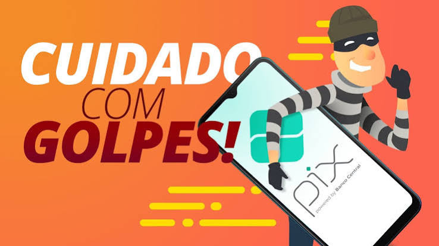

Violência Sexual Digital :

É o ato criminoso de pegar fotos ou vídeos do perfil de alguém (como fotos do Instagram, TikTok ou WhatsApp) sem a permissão da pessoa para criar, modificar ou postar em sites de conteúdo adulto.Hoje em dia, pessoas mal-intencionadas usam aplicativos de Inteligência Artificial para fazer montagens realistas tirando a roupa das pessoas (tecnologia conhecida como Deepfake). Isso é uma invasão grave de privacidade e uma forma de violência digital.Isso é crime! A legislação brasileira (incluindo a Lei Carolina Dieckmann e o Código Penal) pune severamente quem compartilha, cria ou divulga fotos ou vídeos íntimos sem o consentimento da vítima. Quem faz isso pode ser processado e pegar pena de prisão, mesmo se for menor de idade (respondendo por ato infracional).
🔒 Como se proteger:
- Perfil trancado: Mantenham as redes sociais privadas e aceitem apenas amigos e familiares que vocês conhecem na vida real.
- Cuidado com fotos de uniforme: Evitem postar fotos com o uniforme da escola ou que mostrem locais que vocês vão frequentemente.
- Atenção aos detalhes: Fotos em frente ao espelho do quarto ou que mostrem dados pessoais ao fundo podem ser usadas por pessoas mal-intencionadas.
⚖️ O que fazer se for vítima:
- Não apague as provas: Tire print (captura de tela) de tudo, aparecendo o link do site, o perfil de quem postou, o dia e o horário.
- Peça ajuda imediatamente: Converse na hora com os pais, responsáveis ou com a direção da escola. Você não deve sentir vergonha; a vítima nunca é a culpada.
- Denuncie na internet: O site SaferNet Brasil tem um canal anônimo e oficial para derrubar páginas que expõem imagens íntimas sem autorização.
- Ajuda jurídica: É possível registrar um Boletim de Ocorrência em uma Delegacia de Crimes Cibernéticos. Pela Lei Carolina Dieckmann e pelo Código Penal, expor fotos íntimas de terceiros sem consentimento é crime com pena de prisão.
Perfis Fakes:

São perfis de pessoas que fingem ser adolescentes de outra escola, "olheiros" de agências de modelos ou marcas de jogos (como promessa de robux, skins ou dima gratuitos) para puxar assunto, ganhar a confiança de vocês e depois pedir fotos privadas ou informações.
Nunca mandem fotos e informações para ninguém e nunca aceitem seguir perfis de estranhos.
⚖️ O que fazer se for vítima:
- Bloqueie e denuncie imediatamente: Não continue conversando com a pessoa se descobrir que ela mentiu a identidade. Use a ferramenta do próprio Instagram ou TikTok para "Denunciar conta por se passar por outra pessoa".
- Conte para um adulto na hora: Se o perfil fake começar a te ameaçar ou exigir dinheiro/fotos, avise seus pais, responsáveis ou um professor imediatamente. Eles vão saber como te proteger juridicamente.
- prints: Não apague as mensagens de ameaça. Tire print (captura de tela) de todo o histórico da conversa e do link do perfil fake para servir de prova na polícia se for necessário.
Links Falsos:

São mensagens enviadas por WhatsApp, Direct ou Stories com frases muito chamativas (como "Viram o que postaram de você?", "Saiu a lista dos mais feios da escola" ou "Ganhe 500 Robux agora"). O objetivo desses links é roubar a sua senha do Instagram, clonar o seu WhatsApp ou instalar vírus no seu celular para pegar suas fotos e dados.
🔒 Como se proteger:
- Não clique por curiosidade: Se a mensagem veio de um desconhecido ou até de um amigo com um texto estranho , não clique.
- Confirme por fora: Se um amigo te mandar um link esquisito, pergunte para ele em voz alta na escola ou por ligação se foi ele mesmo quem mandou. Muitas vezes o perfil dele já foi hackeado e está mandando vírus sozinho.
- Nunca digite sua senha: Se você clicar em um link e ele abrir uma página pedindo para você "fazer login" no Instagram ou Facebook para ver o conteúdo, saia na hora! É uma página falsa para roubar sua conta.
⚖️ O que fazer se for vítima:
- Troque as senhas imediatamente: Se você clicou e digitou seus dados, mude a senha do seu Instagram e do seu e-mail correndo.
- Ative a verificação em duas etapas: Vá nas configurações do seu aplicativo e ligue essa segurança. Assim, mesmo se o hacker tiver sua senha, ele não consegue entrar.
- Avise seus amigos: Poste um aviso em outra rede social dizendo: "Meu Instagram foi hackeado, não cliquem em nenhum link que eu enviar". Isso impede que outras pessoas caiam no golpe por sua causa.
O Golpe do Pix :

São anúncios ou mensagens falsas espalhadas por perfis hackeados nos Stories do Instagram, canais do WhatsApp ou TikTok. Eles prometem multiplicar o seu dinheiro na hora (exemplo: "Mande um Pix de R$ 30 e receba R$ 300 de volta via robô/sistema") ou oferecem tarefas simples, como "avaliar aplicativos" ou "assistir a vídeos", em troca de salários absurdos por dia.
⚖️ O que fazer se for vítima:
- Tire prints de tudo: Salve o comprovante do Pix, o perfil que anunciou o golpe e as mensagens trocadas.
- Registre um Boletim de Ocorrência: Acesse o site da Polícia Civil do seu estado e faça um B.O. eletrônico de estelionato. Isso ajuda a polícia a rastrear os donos das contas laranjas que recebem os Pix do golpe.
🎮 Golpes e Assédio em Jogos Online:
Muitos criminosos entram em salas de jogos online e usam os chats para enganar crianças e adolescentes. Eles oferecem moedas do jogo de graça (como Robux, Dimas ou Skins) ou convidam para conversar em canais privados (como Discord ou WhatsApp). O objetivo deles é roubar contas ou tentar conseguir informações e fotos das vítimas.
🔒 Como se proteger:
- Nunca passe sua senha ou o e-mail dos seus pais para ganhar itens
- não existe dinheiro ou moedas de graça na internet.
- Se alguém que você conheceu no jogo insistir para te adicionar em outras redes sociais, diga não.
⚖️ O que fazer se for vítima:
- Avise seus pais ou um professor imediatamente.
- Use a ferramenta do próprio jogo para bloquear e denunciar o jogador mal-intencionado
Caso algum desses perigos aconteça, acessem:
SaferNet Brasil (Canal de Ajuda Digital): new.safernet.org.br
Disque 100 (Direitos Humanos): Ligue 100.
Polícia Militar: Ligue 190.
Conselho Tutelar da Região